目录
- What is semi-supervised learning?
- Notations
- Hypotheses
- Consistency Regularization Π-model Temporal ensembling Mean teachers Noisy samples as learning targets
- Pseudo Labeling Label propagation Self-Training Reducing confirmation bias
- Pseudo Labeling with Consistency Regularization MixMatch DivideMix FixMatch
- Combined with Powerful Pre-Training
- Citation
- References
在监督学习任务中面对有限标注数据时，通常会讨论四种方法。
- 预训练+微调：在一个大规模无监督语料上预训练一个强大的、与任务无关的模型，例如在自由文本上通用语言模型，或通过自监督表示学习在无标签图像上预训练视觉模型，然后在下游任务中使用少量标注样本进行微调。
- 半监督学习：同时利用标注和未标注样本进行训练。该方向在视觉任务上已有大量研究。
- 主动学习：标注成本高昂，但我们仍希望在成本预算内收集更多数据。主动学习学会挑选最有价值的未标注样本进行标注，从而在有限预算下更聪明地行动。
- 预训练+数据集自动生成：给定一个能力强大的预训练模型，我们可以利用它自动生成大量标注样本。这种方法在语言领域因少样本学习的成功而特别流行。
我计划撰写一系列关于“数据不足时的学习”的文章。第一部分讨论半监督学习。
什么是半监督学习？
半监督学习同时使用标注数据和未标注数据来训练模型。
有趣的是，现有的半监督学习文献大多聚焦于视觉任务。而在语言任务中，预训练+微调则是更常见的范式。
本文介绍的所有方法都采用由两部分组成的损失函数：\mathcal{L} = \mathcal{L}_s + \mu(t) \mathcal{L}_u。监督损失\mathcal{L}_s在给定所有标注样本时很容易计算。我们将重点放在无监督损失\mathcal{L}_u的设计上。常用的权重项\mu(t)是一个随时间增加\mathcal{L}_u重要性的斜坡函数，其中t为训练步数。
免责声明：本文不会涵盖侧重于修改模型结构的半监督方法。关于如何在半监督学习中使用生成模型和基于图的方法，请参阅这篇综述。
记号说明
| Symbol | Meaning |
|---|---|
| L | Number of unique labels. |
| (\mathbf{x}^l, y) \sim \mathcal{X}, y \in \{0, 1\}^L | Labeled dataset. y is a one-hot representation of the true label. |
| \mathbf{u} \sim \mathcal{U} | Unlabeled dataset. |
| \mathcal{D} = \mathcal{X} \cup \mathcal{U} | The entire dataset, including both labeled and unlabeled examples. |
| \mathbf{x} | Any sample which can be either labeled or unlabeled. |
| \bar{\mathbf{x}} | \mathbf{x} with augmentation applied. |
| \mathbf{x}_i | The i-th sample. |
| \mathcal{L}, \mathcal{L}_s, \mathcal{L}_u | Loss, supervised loss, and unsupervised loss. |
| \mu(t) | The unsupervised loss weight, increasing in time. |
| p(y \vert \mathbf{x}), p_\theta(y \vert \mathbf{x}) | The conditional probability over the label set given the input. |
| f_\theta(.) | The implemented neural network with weights \theta, the model that we want to train. |
| \mathbf{z} = f_\theta(\mathbf{x}) | A vector of logits output by f. |
| \hat{y} = \text{softmax}(\mathbf{z}) | The predicted label distribution. |
| D[.,.] | A distance function between two distributions, such as MSE, cross entropy, KL divergence, etc. |
| \beta | EMA weighting hyperparameter for teacher model weights. |
| \alpha, \lambda | Parameters for MixUp, \lambda \sim \text{Beta}(\alpha, \alpha). |
| T | Temperature for sharpening the predicted distribution. |
| \tau | A confidence threshold for selecting the qualified prediction. |
基本假设
文献中讨论了几种假设，用于支持半监督学习方法中的某些设计决策。
- H1：平滑性假设：如果两个样本在特征空间的高密度区域中距离很近，则它们的标签应该相同或非常相似。
- H2：聚类假设：特征空间同时存在密集区域和稀疏区域。密集的数据点自然形成一个簇。同一簇中的样本预期具有相同的标签。这是H1的一个小扩展。
- H3：低密度分离假设：类间决策边界倾向于位于稀疏的低密度区域，否则决策边界会将一个高密度簇切分成两个类，对应两个簇，这会违背H1和H2。
- H4：流形假设：高维数据往往位于一个低维流形上。尽管现实世界的数据可能以极高维度被观测到（例如真实物体/场景的图像），但它们实际上可以被一个更低维的流形所捕捉，其中某些属性被保留，相似点被紧密分组（例如真实物体/场景的图像并非从所有像素组合的均匀分布中抽样而来）。这使我们能够学习更高效的表示，以便发现和度量未标注数据点之间的相似性。这也是表示学习的基础。[参见一个有帮助的链接]。
一致性正则化
一致性正则化（也称为一致性训练）假设，神经网络中的随机性（例如Dropout）或数据增强变换不应对同一输入产生不同的模型预测。本节中的每种方法都具有形如\mathcal{L}_u的一致性正则化损失。
这个思想已被多个自监督表示学习 对比表示学习方法采用，例如SimCLR、BYOL、SimCSE等。同一样本的不同增强版本应产生相同的表示。语言建模中的通用语言模型和自监督学习中的多视图学习都具有相同的动机。
Π-model
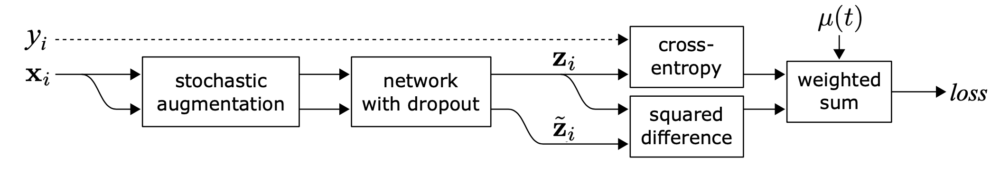
Sajjadi et al. (2016)提出了一种无监督损失，用于最小化同一数据点经过带有随机变换（例如Dropout、随机最大池化）的网络两次后的差异。该损失没有显式使用标签，因此可应用于未标注数据集。Laine & Aila (2017)后来为这种设置命名为Π-Model。
其中f’是施加了不同随机增强或Dropout掩码的同一神经网络。该损失利用了整个数据集。
Temporal ensembling
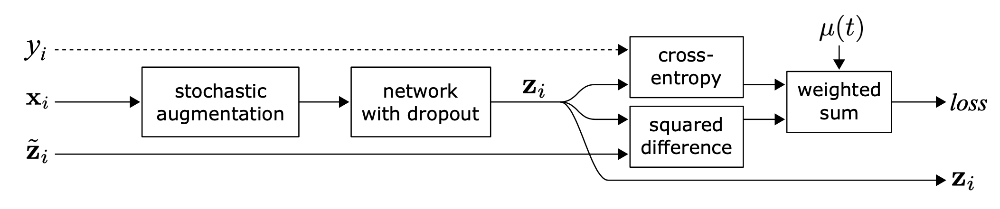
Π-model要求网络对每个样本运行两次前向传播，这会使计算成本翻倍。为了降低成本，Temporal Ensembling（Laine & Aila 2017)为每个训练样本维护一个随时间变化的模型预测指数移动平均（EMA）\tilde{\mathbf{z}}_i作为学习目标，每个epoch仅评估和更新一次。由于集成输出\tilde{\mathbf{z}}_i被初始化为\mathbf{0}，需用(1-\alpha^t)进行归一化以修正这种启动偏差。Adam优化器出于同样原因包含此类偏差修正项。
其中\tilde{\mathbf{z}}^{(t)}是第t个epoch的集成预测，\mathbf{z}_i是当前轮次的模型预测。注意由于\tilde{\mathbf{z}}^{(0)} = \mathbf{0}，经过修正后，\tilde{\mathbf{z}}^{(1)}在第1个epoch简单等价于\mathbf{z}_i。
Mean teachers
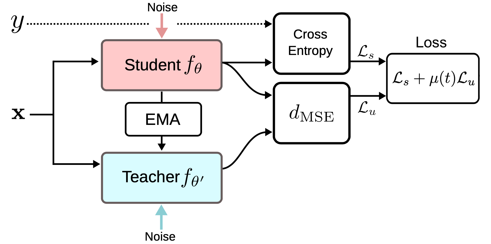
Temporal Ensembling为每个训练样本维护一个标签预测的EMA作为学习目标。然而，该预测仅在每个epoch变化一次，当训练数据集很大时这种方法显得笨拙。Mean Teacher（Tarvaninen & Valpola, 2017)通过跟踪模型权重而非模型输出的移动平均来克服目标更新过慢的问题。我们将权重为\theta的原始模型称为学生模型，将连续学生模型权重进行移动平均后的\theta’称为Mean Teacher：\theta’ \gets \beta \theta’ + (1-\beta)\theta
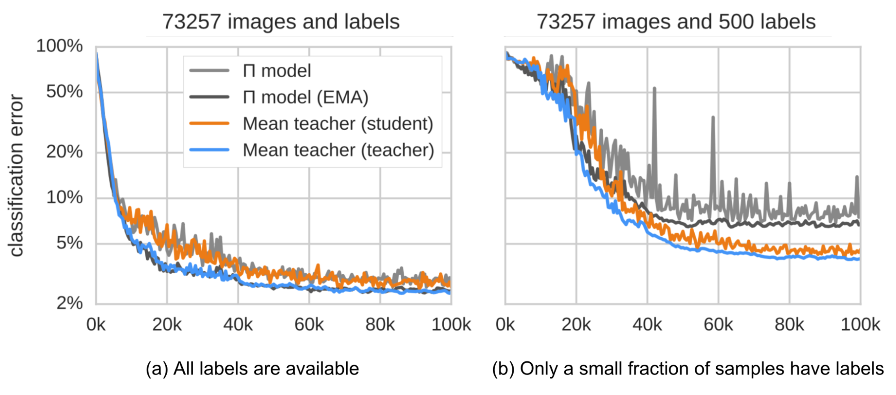
一致性正则化损失是学生和教师预测之间的距离，应最小化学生-教师之间的差距。Mean Teacher预期能提供比学生更准确的预测。这一点在经验实验中得到证实，如图所示。 SVHN分类任务上Mean Teacher与Π Model的分类错误率。Mean Teacher（橙色）性能优于学生模型（蓝色）。（图片来源：Tarvaninen & Valpola, 2017）
根据他们的消融实验，
- 输入增强（例如随机翻转输入图像、高斯噪声）或学生模型的Dropout对于良好性能是必要的。教师模型不需要Dropout。
- 性能对EMA衰减超参数\beta很敏感。一个好的策略是在ramp-up阶段使用较小的\beta=0.99，而在学生模型改进放缓的后期阶段使用较大的\beta=0.999。
- 他们发现使用MSE作为一致性损失函数比KL散度等其他损失函数表现更好。
以带噪样本作为学习目标
最近的几种一致性训练方法学习最小化原始未标注样本与其对应增强版本之间的预测差异。这与Π-model非常相似，但一致性正则化损失仅应用于未标注数据。
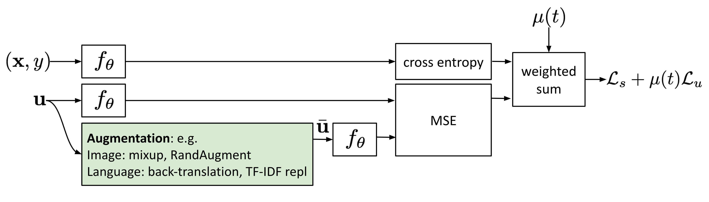
对抗训练（Goodfellow et al. 2014)将对抗噪声施加到输入上，并训练模型对其具有鲁棒性。该设置适用于监督学习，
其中q(y \mid \mathbf{x}^l)是真实分布（用真实标签y的one-hot编码近似），p_\theta(y \mid \mathbf{x}^l)是模型预测。D[.,.]是衡量两个分布之间差异的距离函数。
虚拟对抗训练（VAT；Miyato et al. 2018)将这一思想扩展到半监督学习。由于q(y \mid \mathbf{x}^l)未知，VAT用当前权重下原始输入的当前模型预测\hat{\theta}来替代。请注意\hat{\theta}是模型权重的固定副本，因此不会对\hat{\theta}进行梯度更新。
VAT损失同时适用于标注和未标注样本。它是当前模型在每个数据点上预测流形的负平滑度度量。优化这类损失会促使流形变得更加平滑。
插值一致性训练（ICT；Verma et al. 2019)通过增加更多数据点的插值来增强数据集，并期望模型预测与对应标签的插值保持一致。MixUp（Zheng et al. 2018)操作通过简单的加权和混合两张图像，并结合标签平滑。遵循MixUp的思想，ICT期望预测模型在混合样本上产生的标签与对应输入预测的插值匹配：
其中\theta’是\theta的移动平均，它是一个Mean Teacher。
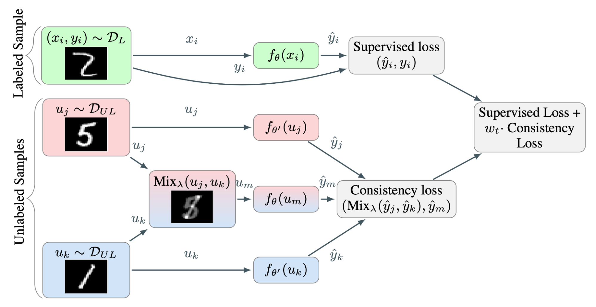
由于两个随机选择的未标注样本属于不同类的概率很高（例如ImageNet有1000个物体类别），对两个随机未标注样本应用mixup的插值很可能发生在决策边界附近。根据低密度分离假设，决策边界倾向于位于低密度区域。
其中\theta’是\theta的移动平均。
与VAT类似，无监督数据增强（UDA；Xie et al. 2020)学习对未标注样本及其增强版本预测相同的输出。UDA特别关注研究“噪声质量”如何影响采用一致性训练的半监督学习性能。使用先进的数据增强方法来产生有意义且有效的带噪样本至关重要。好的数据增强应产生有效（即不改变标签）且多样化的噪声，并带有针对性的归纳偏置。
对于图像，UDA采用RandAugment（Cubuk et al. 2019) ，它从PIL中可用的增强操作中进行均匀采样，无需学习或优化，因此比AutoAugment便宜得多。
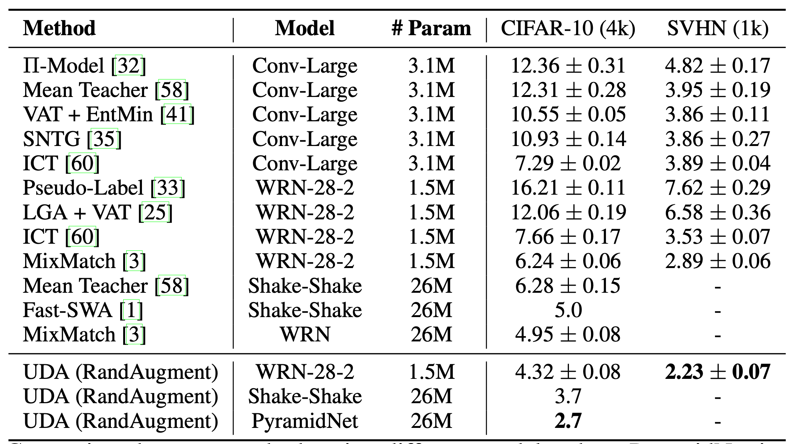
对于语言，UDA结合了反向翻译和基于TF-IDF的词替换。反向翻译保留高层语义，但可能不保留某些词，而基于TF-IDF的词替换会丢弃TF-IDF分数低的无信息词。在语言任务的实验中，他们发现UDA与迁移学习和表示学习是互补的；例如，在领域内无标签数据上微调的BERT（如图8中的\text{BERT}_\text{FINETUNE}）可以进一步提升性能。
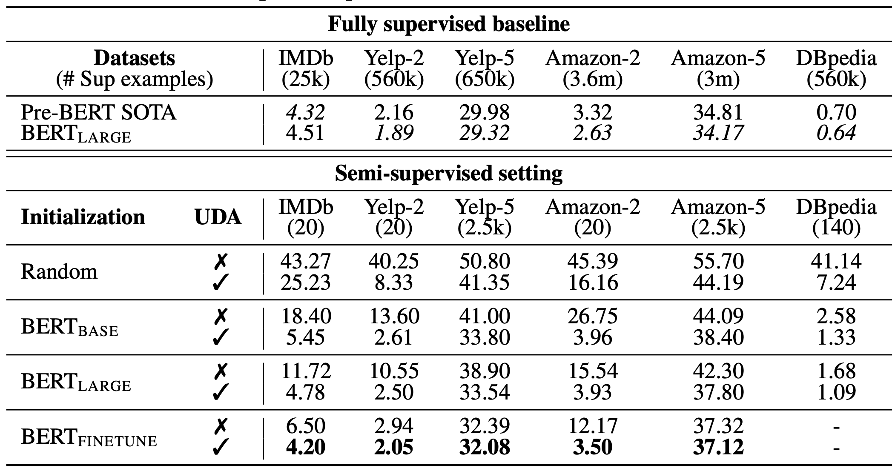
在计算\mathcal{L}_u时，UDA发现两种训练技巧有助于改善结果。
- 低置信度掩码：如果预测置信度低于阈值\tau，则掩盖这些样本。
- 锐化预测分布：在softmax中使用较低温度T来锐化预测的概率分布。
- 领域内数据过滤：为了从大规模领域外数据集中提取更多领域内数据，他们训练了一个分类器来预测领域内标签，然后保留高置信度预测的样本作为领域内候选。
其中\hat{\theta}是模型权重的固定副本，与VAT中相同，因此无梯度更新，\bar{\mathbf{x}}是增强后的数据点。\tau是预测置信度阈值，T是分布锐化温度。
伪标签方法
伪标签（Lee 2013)根据当前模型预测的最大softmax概率为未标注样本分配伪造标签，然后在纯监督设置中同时基于标注和未标注样本训练模型。
为什么伪标签有效？伪标签实际上等价于熵正则化（Grandvalet & Bengio 2004),它最小化未标注数据类概率的条件熵，以促进类间低密度分离。换句话说，预测的类概率实际上是类重叠的度量，最小化熵等价于减少类重叠，从而实现低密度分离。
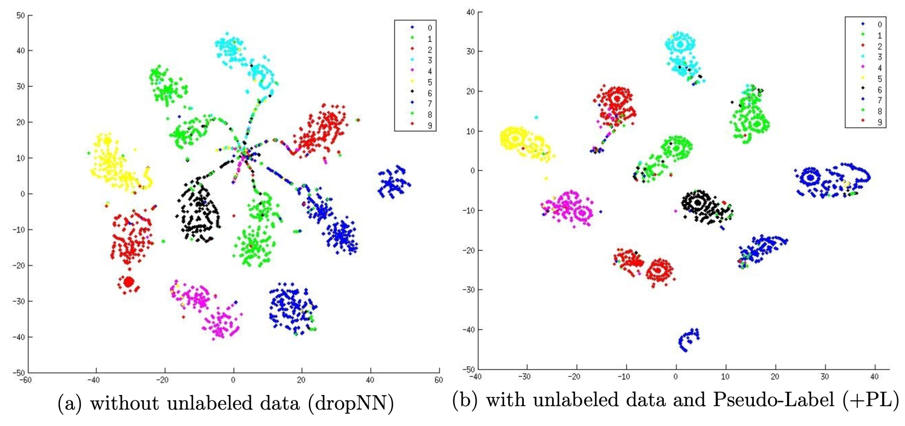
使用伪标签的训练自然是一个迭代过程。我们将产生伪标签的模型称为教师，将使用伪标签学习的模型称为学生。
标签传播
标签传播（Iscen et al. 2019)的思想是基于特征嵌入在样本之间构建相似性图。然后伪标签从已知样本“扩散”到未标注样本，其中传播权重与图中成对相似性分数成正比。从概念上讲，它类似于k-NN分类器，两者都存在在大规模数据集上难以扩展的问题。
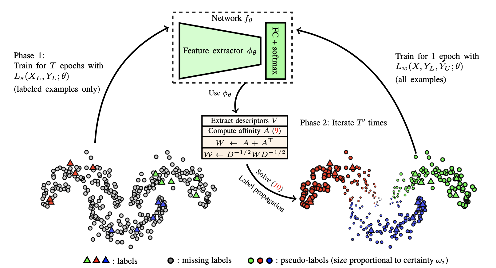
自训练
自训练并不是一个新概念（Scudder 1965，Nigram & Ghani CIKM 2000）。它是一种迭代算法，在所有未标注样本都被赋予标签之前，交替执行以下两个步骤：
- 初始时在标注数据上构建一个分类器。
- 然后使用该分类器为未标注数据预测标签，并将置信度最高的样本转换为标注样本。
Xie et al. (2020)将自训练应用于深度学习并取得了出色成果。在ImageNet分类任务上，他们首先训练一个EfficientNet（Tan & Le 2019)模型作为教师，为3亿未标注图像生成伪标签，然后训练一个更大的EfficientNet作为学生，同时使用真实标注和伪标签图像进行学习。他们设置中的一个关键元素是在学生模型训练时加入噪声，而教师生成伪标签时不加噪声。因此他们的方法被称为Noisy Student。他们对学生应用随机深度（Huang et al. 2016)）、Dropout和RandAugment来引入噪声。噪声对学生超越教师的表现至关重要。加入的噪声具有复合效应，能够促使模型在标注和未标注数据上的决策边界都保持平滑。
Noisy Student自训练中其他几个重要的技术配置包括：
- 学生模型应足够大（即比教师更大），以便能拟合更多数据。
- Noisy Student应搭配数据平衡，特别是要平衡每个类别中伪标签图像的数量。
- 软伪标签比硬伪标签效果更好。
Noisy Student还能提升对抗FGSM（快速梯度符号攻击，即利用损失对输入数据的梯度来调整输入以最大化损失）攻击的鲁棒性，尽管模型并未针对对抗鲁棒性进行优化。
SentAugment由Du et al. (2020)提出，旨在解决语言领域自训练时领域内未标注数据不足的问题。它依赖句子嵌入从大规模语料中找到领域内的未标注样本，并使用检索到的句子进行自训练。
降低确认偏差
确认偏差是由不完美的教师模型提供的错误伪标签导致的问题。过度拟合错误标签可能无法得到更好的学生模型。
为了降低确认偏差，Arazo et al. (2019)提出了两种技术。其中之一是结合MixUp使用软标签。给定两个样本(\mathbf{x}_i, \mathbf{x}_j)及其对应的真实或伪标签(y_i, y_j)，插值标签方程可以转化为使用softmax输出的交叉熵损失：
如果标注样本极少，仅使用Mixup是不够的。他们进一步通过对标注样本进行过采样，在每个mini-batch中设置最小标注样本数量。这种做法比简单提高标注样本权重效果更好，因为它带来更频繁的更新，而不是幅度较大但次数少的更新，后者可能不够稳定。与一致性正则化类似，数据增强和Dropout对于伪标签方法良好运行也非常重要。
Meta Pseudo Labels（Pham et al. 2021)根据学生在标注数据集上的表现持续调整教师模型。教师和学生并行训练，教师学会生成更好的伪标签，学生则从伪标签中学习。
设教师和学生模型权重分别为\theta_T和\theta_S。学生模型在标注样本上的损失被定义为\theta^\text{PL}_S(.)关于\theta_T的函数，我们希望通过相应优化教师模型来最小化该损失。
然而，直接优化上述方程并不容易。借鉴MAML的思想，它用\theta_S的一步梯度更新来近似多步的\arg\min_{\theta_S}，
使用软伪标签时，上述目标是可微分的。但如果使用硬伪标签，它不可微，因此需要使用强化学习，例如REINFORCE。
优化过程在训练两个模型之间交替进行：
- 学生模型更新：给定一批未标注样本\{ \mathbf{u} \}，我们通过f_{\theta_T}(\mathbf{u})生成伪标签，并用一步SGD优化\theta_S：\theta’_S = \color{green}{\theta_S - \eta_S \cdot \nabla_{\theta_S} \mathcal{L}_u(\theta_T, \theta_S)}。
- 教师模型更新：给定一批标注样本\{(\mathbf{x}^l, y)\}，我们复用学生的更新来优化\theta_T：\theta’_T = \theta_T - \eta_T \cdot \nabla_{\theta_T} \mathcal{L}_s ( \color{green}{\theta_S - \eta_S \cdot \nabla_{\theta_S} \mathcal{L}_u(\theta_T, \theta_S)} )。此外，还对教师模型应用UDA目标以引入一致性正则化。
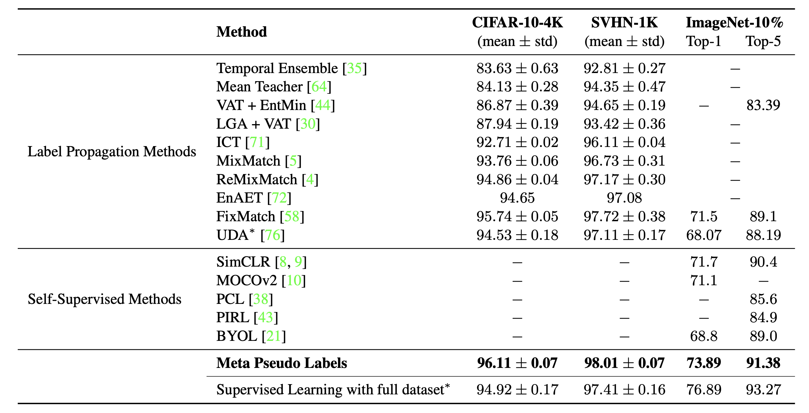
结合一致性正则化的伪标签方法
可以将上述两种方法结合起来，同时使用伪标签和一致性训练来进行半监督学习。
MixMatch
MixMatch（Berthelot et al. 2019)作为一种整体性的半监督学习方法，通过融合以下技术来利用未标注数据：
- 一致性正则化：鼓励模型对扰动后的未标注样本输出相同的预测。
- 熵最小化：鼓励模型对未标注数据输出置信的预测。
- MixUp增强：鼓励模型在样本之间具有线性行为。
给定一批标注数据\mathcal{X}和未标注数据\mathcal{U}，我们通过\text{MixMatch}(.)、\bar{\mathcal{X}}和\bar{\mathcal{U}}创建它们的增强版本，其中包含增强样本和未标注样本的猜测标签。
其中T是用于减少猜测标签重叠的锐化温度；K是每个未标注样本生成的增强次数；\alpha是MixUp中的参数。
对于每个\mathbf{u}，MixMatch生成K个增强版本，对k=1, \dots, K进行\bar{\mathbf{u}}^{(k)} = \text{Augment}(\mathbf{u})，并基于平均值猜测伪标签：\hat{y} = \frac{1}{K} \sum_{k=1}^K p_\theta(y \mid \bar{\mathbf{u}}^{(k)})。
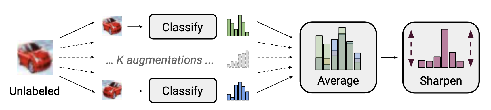
根据他们的消融实验，尤其是在未标注数据上使用MixUp至关重要。去除伪标签分布上的温度锐化会大幅降低性能。对多个增强结果取平均来进行标签猜测也是必要的。
ReMixMatch（Berthelot et al. 2020)通过引入两种新机制改进了MixMatch：
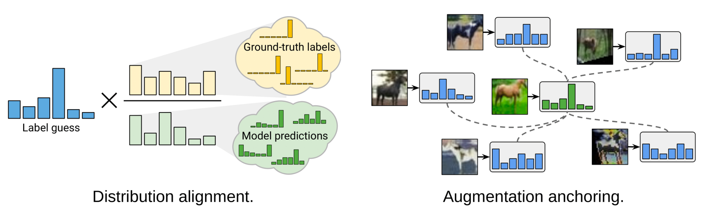
- Distribution alignment. It encourages the marginal distribution p(y) to be close to the marginal distribution of the ground truth labels. Let p(y) be the class distribution in the true labels and \tilde{p}(\hat{y}) be a running average of the predicted class distribution among the unlabeled data. The model prediction on an unlabeled sample p_\theta(y \vert \mathbf{u}) is normalized to be \text{Normalize}\big( \frac{p_\theta(y \vert \mathbf{u}) p(y)}{\tilde{p}(\hat{y})} \big) to match the true marginal distribution. Note that entropy minimization is not a useful objective if the marginal distribution is not uniform. I do feel the assumption that the class distributions on the labeled and unlabeled data should match is too strong and not necessarily to be true in the real-world setting.
- Augmentation anchoring. Given an unlabeled sample, it first generates an “anchor” version with weak augmentation and then averages K strongly augmented versions using CTAugment (Control Theory Augment). CTAugment only samples augmentations that keep the model predictions within the network tolerance.
ReMixMatch的损失由以下几项组合而成，
- 施加了数据增强和MixUp的监督损失；
- 施加了数据增强和MixUp的无监督损失，以伪标签为目标；
- 对单个强增强未标注图像（不使用MixUp）的交叉熵损失；
- 类似于自监督学习的自监督表示学习损失。
DivideMix
DivideMix（Junnan Li et al. 2020)将半监督学习与带噪标签学习（LNL）相结合。它通过GMM对每个样本的损失分布进行建模，动态地将训练数据划分为包含干净样本的标注集和包含噪声样本的未标注集。遵循Arazo et al. 2019中的思想，他们对每个样本的交叉熵损失\ell_i = y_i^\top \log f_\theta(\mathbf{x}_i)拟合一个两成分GMM。干净样本预期会比噪声样本更快获得更低的损失。均值较小的成分对应干净标签的簇，我们将其记为c。如果GMM后验概率w_i = p_\text{GMM}(c \mid \ell_i)（即样本属于干净样本集的概率）大于阈值\tau，则该样本被视为干净样本，否则视为噪声样本。
这个数据聚类步骤被称为co-divide。为了避免确认偏差，DivideMix同时训练两个不同的网络，每个网络使用来自另一个网络的数据划分；类似于Double Q Learning的工作原理。
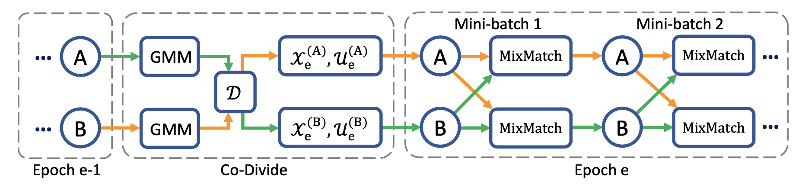
与MixMatch相比，DivideMix增加了一个处理噪声样本的co-divide阶段，并在训练过程中进行了以下改进：
- 标签共同精炼：它将真实标签y_i与网络的预测\hat{y}_i进行线性组合，后者是对\mathbf{x}_i的多个增强版本的平均，并由另一个网络产生的干净集概率w_i指导。
- 标签共同猜测：它对未标注数据样本的两个模型预测取平均。
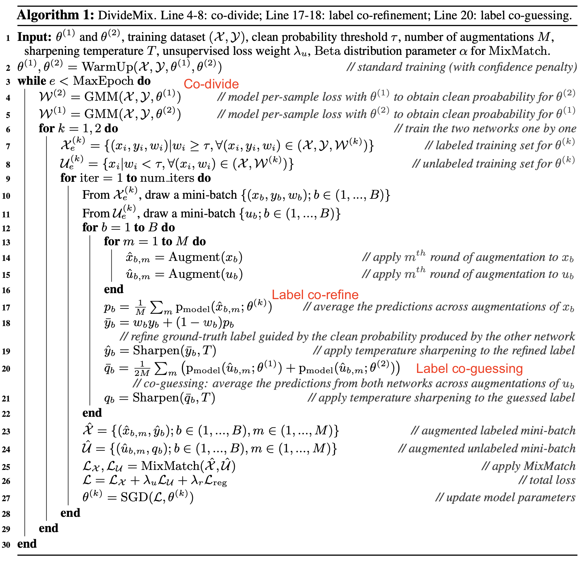
FixMatch
FixMatch（Sohn et al. 2020)使用弱增强对未标注样本生成伪标签，并仅保留高置信度的预测。这里弱增强和高置信度过滤都有助于产生高质量、可信的伪标签目标。然后FixMatch学习在强增强样本上预测这些伪标签。
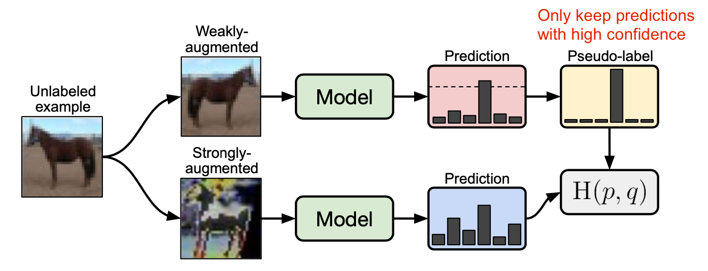
其中\hat{y}_b是未标注样本的伪标签；\mu是决定\mathcal{X}和\mathcal{U}相对大小的超参数。
- 弱增强\mathcal{A}_\text{weak}(.)：标准的翻转-平移增强
- 强增强\mathcal{A}_\text{strong}(.)：AutoAugment、Cutout、RandAugment、CTAugment
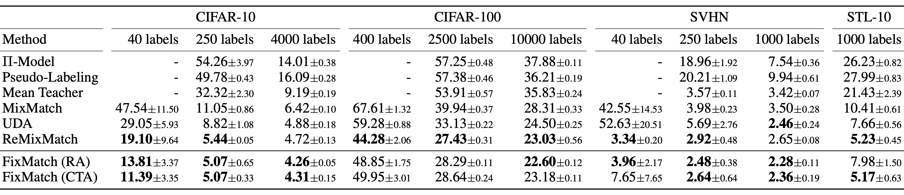
根据FixMatch的消融实验，
- 使用温度参数T对预测分布进行锐化在采用阈值\tau时没有显著影响。
- 作为强增强一部分的Cutout和CTAugment对于良好性能是必要的。
- 如果将用于标签猜测的弱增强替换为强增强，模型会在训练早期发散。如果完全丢弃弱增强，模型会过拟合猜测标签。
- 使用弱增强而非强增强进行伪标签预测会导致性能不稳定。强数据增强至关重要。
与强大的预训练结合
在语言任务中特别常见的一种范式是，首先通过自监督学习在一个大规模无监督语料上预训练一个与任务无关的模型，然后在下游任务中使用少量标注数据集进行微调。研究表明，如果将半监督学习与预训练结合，可以获得额外的收益。
Zoph et al. (2020)研究了自训练在多大程度上能比预训练表现更好。他们的实验设置是用ImageNet进行预训练或自训练来改进COCO。注意，当使用ImageNet进行自训练时，会丢弃标签，仅将其作为未标注数据点。He et al. (2018)已证明，如果下游任务差异很大（如物体检测），ImageNet分类预训练的效果并不好。
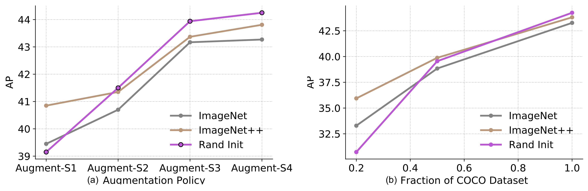
他们的实验展示了一系列有趣的发现：
- 随着下游任务可用的标注样本增多，预训练的有效性会减弱。预训练在低数据 regime（20%）下有帮助，但在高数据 regime下是中性甚至有害的。
- 自训练在高数据/强增强 regime下有帮助，即使预训练有害。
- 自训练可以在预训练之上带来额外的改进，即使使用相同的数据源。
- 自监督预训练（例如通过SimCLR）在高数据 regime下会损害性能，与监督预训练类似。
- 联合训练监督和自监督目标有助于解决预训练与下游任务之间的不匹配。预训练、联合训练和自训练都是可叠加的。
- 带噪标签或非针对性标注（即预训练标签与下游任务标签不一致）比有针对性的伪标签效果更差。
- 自训练在计算上比在预训练模型上微调更昂贵。
Chen et al. (2020)提出了一种三步流程，将自监督预训练、监督微调和自训练的好处合并在一起：
- Unsupervised or self-supervised pretrain a big model.
- Supervised fine-tune it on a few labeled examples. It is important to use a big (deep and wide) neural network. Bigger models yield better performance with fewer labeled samples.
- Distillation with unlabeled examples by adopting pseudo labels in self-training. It is possible to distill the knowledge from a large model into a small one because the task-specific use does not require extra capacity of the learned representation. The distillation loss is formatted as the following, where the teacher network is fixed with weights \hat{\theta}_T.
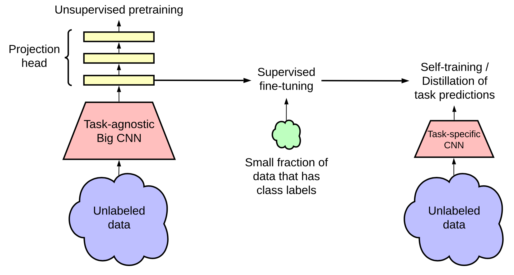
他们在ImageNet分类任务上进行了实验。自监督预训练使用SimCLRv2，这是对比表示学习的直接改进版本。他们实证研究中的观察证实了几个结论，与Zoph et al. 2020一致：
- 更大的模型标签效率更高；
- SimCLR中更大/更深的项目头能改善表示学习；
- 使用未标注数据进行蒸馏能提升半监督学习效果。
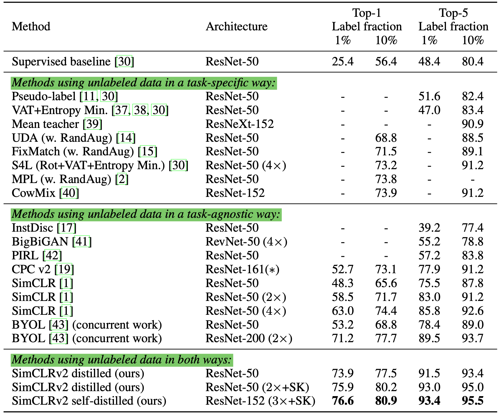
💡 近期半监督学习方法的共同主题小结，许多旨在降低确认偏差：
- 通过先进的数据增强方法对样本施加有效且多样的噪声。
- 在处理图像时，MixUp是一种有效增强。它也可以用于语言，带来少量增益（Guo et al. 2019）。
- 设置一个阈值，丢弃低置信度的伪标签。
- 在每个mini-batch中设置最小标注样本数量。
- 锐化伪标签分布以减少类别重叠。
引用
引用格式：
Weng, Lilian. (Dec 2021). Learning with not enough data part 1: semi-supervised learning. Lil’Log. https://lilianweng.github.io/posts/2021-12-05-semi-supervised/.
@article{weng2021semi,
title = "Learning with not Enough Data Part 1: Semi-Supervised Learning",
author = "Weng, Lilian",
journal = "lilianweng.github.io",
year = "2021",
month = "Dec",
url = "https://lilianweng.github.io/posts/2021-12-05-semi-supervised/"
}
参考文献
[1] Ouali, Hudelot & Tami. “An Overview of Deep Semi-Supervised Learning” arXiv preprint arXiv:2006.05278 (2020).
[2] Sajjadi, Javanmardi & Tasdizen “Regularization With Stochastic Transformations and Perturbations for Deep Semi-Supervised Learning.” arXiv preprint arXiv:1606.04586 (2016).
[3] Pham et al. “Meta Pseudo Labels.” CVPR 2021.
[4] Laine & Aila. “Temporal Ensembling for Semi-Supervised Learning” ICLR 2017.
[5] Tarvaninen & Valpola. “Mean teachers are better role models: Weight-averaged consistency targets improve semi-supervised deep learning results.” NeuriPS 2017
[6] Xie et al. “Unsupervised Data Augmentation for Consistency Training.” NeuriPS 2020.
[7] Miyato et al. “Virtual Adversarial Training: A Regularization Method for Supervised and Semi-Supervised Learning.” IEEE transactions on pattern analysis and machine intelligence 41.8 (2018).
[8] Verma et al. “Interpolation consistency training for semi-supervised learning.” IJCAI 2019
[9] Lee. “Pseudo-label: The simple and efficient semi-supervised learning method for deep neural networks.” ICML 2013 Workshop: Challenges in Representation Learning.
[10] Iscen et al. “Label propagation for deep semi-supervised learning.” CVPR 2019.
[11] Xie et al. “Self-training with Noisy Student improves ImageNet classification” CVPR 2020.
[12] Jingfei Du et al. “Self-training Improves Pre-training for Natural Language Understanding.” 2020
[13] Iscen et al. “Label propagation for deep semi-supervised learning.” CVPR 2019
[14] Arazo et al. “Pseudo-labeling and confirmation bias in deep semi-supervised learning.” IJCNN 2020.
[15] Berthelot et al. “MixMatch: A holistic approach to semi-supervised learning.” NeuriPS 2019
[16] Berthelot et al. “ReMixMatch: Semi-supervised learning with distribution alignment and augmentation anchoring.” ICLR 2020
[17] Sohn et al. “FixMatch: Simplifying semi-supervised learning with consistency and confidence.” CVPR 2020
[18] Junnan Li et al. “DivideMix: Learning with Noisy Labels as Semi-supervised Learning.” 2020 [code]
[19] Zoph et al. “Rethinking pre-training and self-training.” 2020.
[20] Chen et al. “Big Self-Supervised Models are Strong Semi-Supervised Learners” 2020